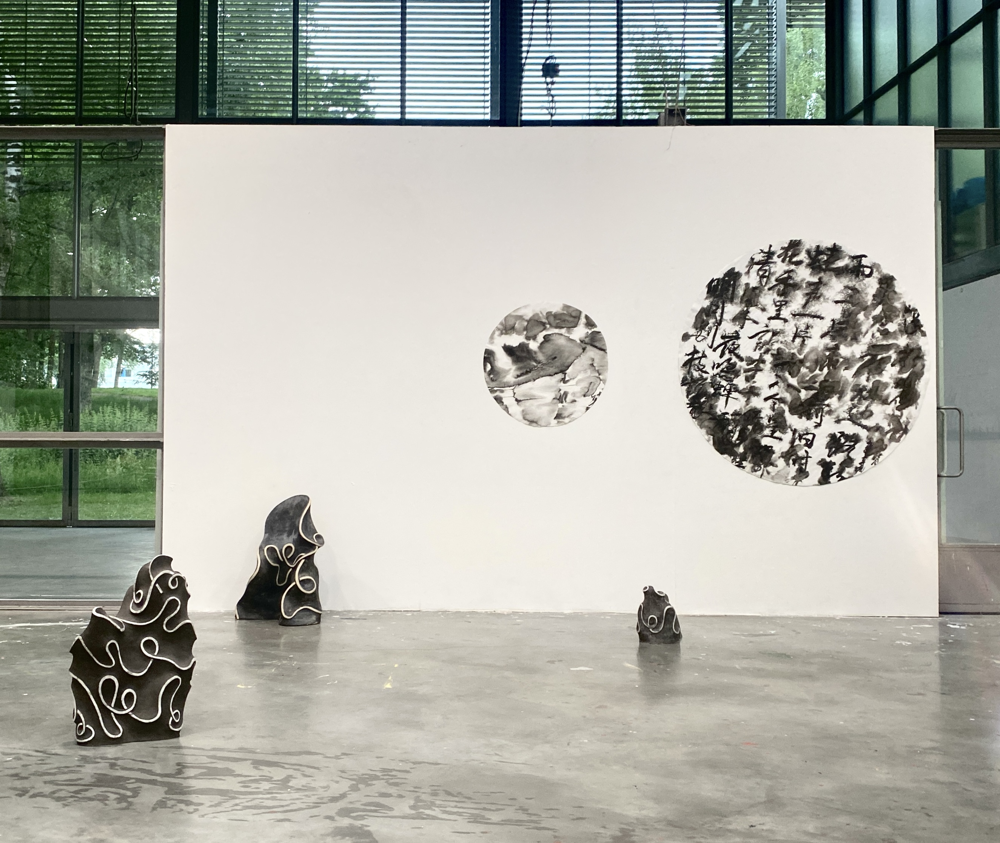
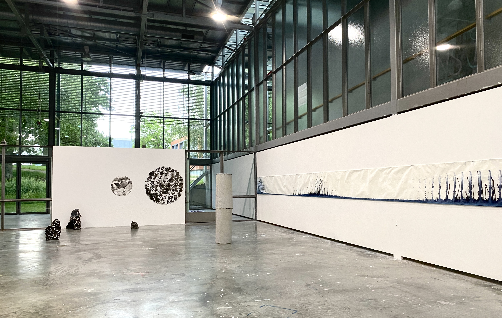

LA DISSOLUTION DE L'HISTOIRE I
C’etait un pratique de calligraphie qui cite deux ancien poèmes “Monter le pont de Lu" du poète chinois de la dynastie des Song qui s’appelle Xin Qiji (28 mai 1140-3 octobre 1207)en douzième siècles, ce poème décrit principalement les paysages des montagnes et des rivières que l'auteur avait vu et ses réflexions sur les vicissitudes de la nature et des affaires humaines. Et l’autre poème il décrit le paysage que le poète avait vu en marchant sur le chemin la nuit, il y a la lune claire, les pies, la brise, le parfum des fleurs de riz, les cris des cigales et des grenouilles, etc. Je l'ai écrit ces poèmes à l'encre sur du papier complètement imbibé, puis les mots ont été dissous dans l’eau au dessus, et en laissant une trace si abstraite après séchage. Je pense que ça se représente une transition de la forme tangible vers l’intangible. Comme Les caractères c’étaient identifiable, et après ce processus de dissolution cela s’a fait être méconnaissable pour moi. Je l’ai coupé en cercle parce que je pense dans mes installations ou dans mes travaux ci il se manque une forme cercle pour lier un souvenir de mes expériences d’enfance de voir le champ de pastèques et c’est aussi le rond comme la forme de la lune, je pense que cette composition donne plus de imagination dans l’espace. Cette sculpture en céramique c’est ce que je voudrais réaliser le processus en espace tridimensionnel, et je l'ai transformé cette perception du processus de dissolution et des traces sous la forme d'une ligne abstraite, la ligne c’est aussi une representation de la forme abstraite de mes pratiques de calligraphie .


